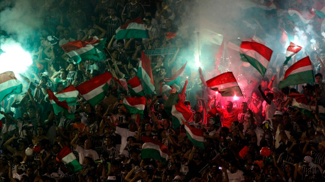

O clube demite mais um tecnico do time,os torcedores se perguntão quando essa 'palhaçada' vai acabar.
Nessa manhã do dia 15/02/2000, o clube do fluminese anunciou a demição do tecnico Fransisco Matos, o responsavel que levou o time para a vitoria da libertadores três vezes.
Essa decisão causou revoltas nos fãs do time que fizeram manifestações na porta do clube pedindo a demição do diretor do clube

Essa não é a primeira vez que o clube faz isso,mas mesmo assim continua fazendo os mesmos erros.
A torcida revoltada em frente a sede do clube, estão vandalizando a entrada e gritando 'fora Mateus!'
O responsável pelo clube aina não se pronunciou sobre o caso.
Vasco vai ser rebaixado para a série c, se o time perder o proximo jogo conta o santos.
Voltar par a páguina principal